Glandular Lesions
Glandular Lesions
- Reliable cytologic detection of glandular abnormalities is not as common as squamous abnormalities
- Glandular lesions are less common than squamous lesions
- There are two main types of glandular lesions: endocervical and endometrial
- Pap test has low sensitivity and specificity in both types of glandular lesions
- Cytologists and pathologists are not as familiar with cytologic features as squamous lesions
- There has been an increase in incidence of endocervical glandular lesions in recent years
- May or may not be associated with advances in endocervical sampling devices
- Endometrial lesions identified by exfoliating ceells, not direct sampling
- TBS 2001 and 2014 classifies atypical glandular cells (AGC) as an ECA
- Formerly AGUS, atypical glandular cells of undetermined significance
- AGC added to TBS to increase sensitivity
- On biopsy correlation, most AGC cases turn out to be benign glandular lesions or squamous intraepithelial lesions
- 5-10% of AGC are adenocarcinomas
- Squamous lesions more common in younger women, adenocarcinomas more common in older women
- TBS subclassifies cellular changes into endocervical types, endometrial types, glandular cells NOS (when pattern does not point to a specific type)
- Other category has two options:
- Endometrial cells in a women 40+ years with specification if NILM
- Glandular cells status post-hysterectomy
Reactive Endocervical Cells
- Reactive changes occur due to a variety of stimuli
- Include cervicitis, IUD use, pregnancy, oral contraceptive use, polyps etc.
- Key reactive endocervical cells are rounded groups, vacuolated cytoplasm and prominent nucleoli
- Also endocervical cells remain in flat sheets but are “plumper”
- Reactive endocervical cells demonstrate increase in both size nucleus and cytoplasm-no change in N:C ratio
- Multinucleation and enlarged nucleoli are common
- Cytoplasm can be dense, hard to distinguish from squamous cells
- Vacuolization –ranging small to large is hallmark of endocervical cells
- Can mimic vacuoles observed in adenocarcinoma
Endocervical Polyps
- Biopsy diagnosis
- Common growth arising in endocervical canal
- Growth pattern is exophytic (protruding out into the gland)
- Protrude into cervical os
- May become ulcerated or denuded
- Patients may experience spotting (bleeding)
- Sessile or polypoid mass
- Made of fibromyxomatous stroma covered by endocervical glands
- Cytologic pattern of endocervical cells repair with some normal mitotic activity
- HCGs also present
- Endocervical repair:
- The pattern you see here is typical of polyps and other benign endocervical changes
- Endocervical epair is identical to squamous cells
- Vacuoles more evident
- Macronucleoli
- Pale, even chromatin
- Cohesive, orderly groups
- Clean background
- ThinPrep-rounding up mutes, flat flowing sheets
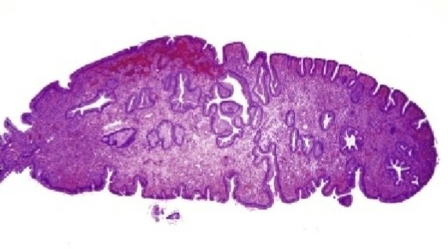
Lower Uterine Segment Sampling
- Endocervical brushes now designed to rigorously sample endocervical canal
- But Sampling of LUS also occurs, the junction of endocervix and endometrium
- Brushes produce large number of cells in thick fragments, tubular forms, sheets and strips, some crowding (HCG)
- Large dark nuclei but round and regular
- Look for maintenance order, honeycombs and picket fences
- Stromal cells, elongated and spindly are in background
- LUS and samples taken after conization are similar
- Differentials are endometriosis, AGC lesions, SIL
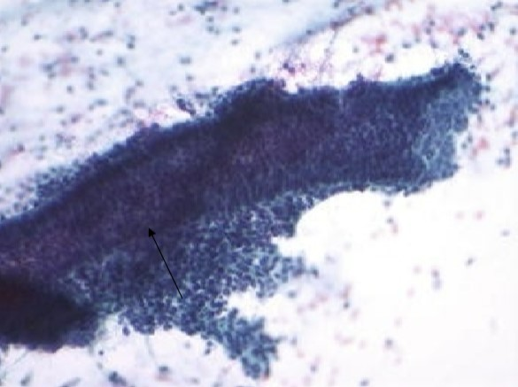
Tubal Metaplasia
- Metaplastic process arising in both endocervix and endometrium
- Replacement of glandular cells with fallopian tube epithelium (Intercalated (peg) cells, ciliated, secretory)
- Intercalated cells are triangular, high N/C ratios, elongated nuclei and granular cytoplasm
- Secretory cells are large cells with pale vacuolated cytoplasm
- Ciliated cells key to benign process-look for and dot
- On both cytology and histology, mimicker of endocervical adenocarcinoma in situ (AIS)
- More common in women age 35+ years
- Arises high in endocervical canal
- Observed in increase frequency with newer sampling devices
- Features very similar to AIS due to hyperchromatic crowded groups and pseudostratification
- Small to medium sized orderly groups
- Increased N/C ratio
- Round oval nuclei with some pleomorphism but overall uniform, hyperchromatic
- Blander than AIS
- Small inconspicuous nucleoli
- Finely granular, even distributed pale chromatin
- May observe increase hyperchromasia
- Sharp terminal bar and cilia most important feature
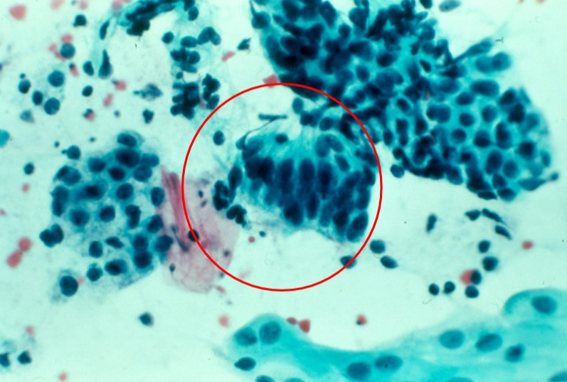
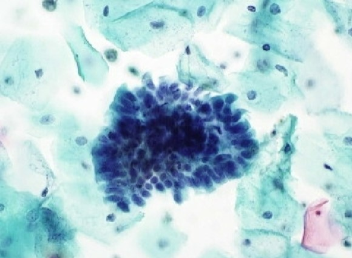
Microglandular Hyperplasia (Pseudoparakeratosis)
- Benign proliferation of endocervical cells
- More common in reproductive age women
- Associated with prolonged progesterone effect eg. women on OCP
- Single, round cells with pyknotic nuclei along with clusters of endocervical cells
- Single cells have an orangeophilic cytoplasm but not dense and glassy, but vacuolated
- Pattern mimics parakeratosis thus the term pseudoparakeratosis
Intrauterine Device Change
- Clinicians need to provide the history of IUD insertion
- Recall that actinomycetes infection tends to occur with IUD use
- More significant changes occur in glandular cells
- Two types of changes associated with IUD
- Mimic adenocarcinoma-Small clusters of round cells large “bubble gum” vacuoles. Key is bland nuclei
- Mimic HSIL- Isolated cells with smudged nuclei resembles HSIL


Glandular Cells Post-Hysterectomy
- History of hysterectomy is key
- Supracervical hysterectomy- endocervical cells from stump.
- What if cervix is gone?
- Several explanations- vaginal adenosis, atrophic changes, fallopian tube cells, well-differentiated carcinoma
- Common explanation-associated with mucinous metaplasia, a therapy induced change
- Cytologic pattern resembles normal endocervical cells
Vaginal Adenosis
- In the 1940 to 1965, women were given a drug Diethylstilbestrol (DES), a synthetic estrogen, for complications of pregnancy
- Caused irregularity in p63 expression in daughters
- Daughters developed benign and malignant lesions of FGT
- Males developed abnormalities of spermatogenesis and kidney malformations
- Adenosis is the formation of mucus producing benign columnar cells in the vagina and ectocervix, look identical to endocervical cells
- Histologically, defined as persistence of Mullerian glandular epithelium in vaginal canal after birth
- Glandular epitheliums should not persist in squamous epithelium
- Cytological pattern is that of normal looking endocervical cells
- Key is the clinical history of site sampled-must be vaginal or ectocervical smear
Endocervical Cell Abnormality
Atypical Endocervical Glandular Cells
- Atypical glandular cells with changes that are more than benign reactive but fall short of neoplastic processes
- Cells occurring primarily in sheets and strips
- Also Rosette formation -circular shapes with cytoplasms in center, nuclei at circle edges
- Disorderly architecture arrangement
- Hyperchromatic Crowded groups
- Nuclei three to five times normal endocervical cells
- Slight increase in hyperchromasia, coarse chromatin and irregularity
- Nucleoli are often absent but more evident and prominent on LBP
Adenocarcinoma In Situ (AIS)
- Precursor to endocervical adenocarcinoma, a rare lesion
- One of the most difficult lesions to identify due to challenging pattern
- Younger, white population-occurs around 39 years age, mainly asymptomatic
- Associated with HPV 18
- Co-occurrence with SIL ~ in 50% of those with AIS
- Even though an in- situ lesion, symptoms may occur and include post coital bleeding, abnormal discharge
- Additional challenge is that colposcopy negative due to lack of visual features
- Conization best approach for an accurate diagnosis
- Histology:
- AIS features endovcervical glands that produce outpouchings, papillary infoldings and cribiform patterns (spherical formations with swiss cheese holes)
- Endocervical cells are crowded and appear stratified (more than one cell layer) but are not truly (pseudostratification, due to nuclei at different levels)
- Endocervical cells have an increased N:C ratio
- Main clue is change from round to elongated, cigar/pencil shape nuclei that fill up cytoplasm which leads to scanty cytoplasm
- Chromatin is coarse and hyperchromatic
- Mitotic figures and apoptotic bodies
- Cytoplasm is scanty, granular, basophilic, not vacuolated
- Cytology of AIS
- Cytologic features are appreciated on both low and high power views
- On scanning power, appreciate increase in hyperchromatic crowded groups
- Also note small sheets, palisading strips, or biopsy-like fragments, strips, acinar and rosette formations (numerous patterns)
- All or most will have a thick, 3D appearance
- Normal honeycomb pattern is lost but may have normal cells next to abnormal cells
- Crowded dark nuclei give a frayed or "feathered" appearance at cell edges
- True feathering peripheral nuclei protruding out
- Cells tightly crowded with pseudostratified nuclei
- Branching grlandular forms, groups larger on conventional samples, less so on LBP
- Higher power will reveal extreme nuclear crowding
- Pleomorphic and palisading features, slight variation in size
- Other description is elongated, pencil/cigar-shaped nuclei
- Hyperchromatic, moderate coarse chromatin
- Nucleoli are not evident on conventional smear but more prominent in LBP
- Mitotic features and apoptotic bodies, with occasional broken up chromatin
- Clean background because AIS is not an invasive lesion
- AIS stains positive for Carcinoembryonic antigen (CEA) and CA-125 (both cytoplasm stains)
- Endometrioid Variant
- Characterized by small cuboidal cells
- Similar to well differentiated endometrial adenocarcinoma
- Intestinal Variant
- Characterized by goblet cells and papillary forms
- Goblet cells have large mucinous vacuoles
- Resembles colorectal adenocarcinoma
- Adenosquamous Variant
- Mixture of squamous and glandular types
- Poorly Differentiated AIS
- Non-specific adenocarcinoma features
- Ciliated AIS
- Extremely rare
- Similar to fallopian tube cells
- More common in women in 40s-50s and incidence is increasing
- Origin from same germ cells as squamous carcinoma
- HPV 18 is associated but higher rates of HPV negative adenocarcinomas than squamous carcinomas
- Often co-exists with squamous lesions, but less than 5% of squamous lesions has co-existing endocervical adenocarcinoma
- Same risk factors as squamous carcinoma
- Symptoms are same as squamous cell carcinoma
- Arises in squamocolumnar junction
- Produces barrel-shaped cervix
- Large endophytic lesions, often disseminated when diagnosed
- Lesions high in canal may be missed
- Colposcopy is not a reliable method of detection
- Thought to be more aggressive than squamous cell carcinoma
- Early invasion of endocervical adenocarcinoma
- Defined as invasion more than 5mm below basement membrane
- Desmoplastic stromal reaction of chronic inflammatory cells
- Difficult to identify on cytology
- Pattern identical to AIS
- Evidence of tumor diathesis = early sign of invasion
- Histology of Invasive Cervical Adenocarcinom:
- Various subtypes are best recognized histologically
- Pure adenocarcinomas
- Endocervical and villoglandular adenocarcinoma
- Mucinous adenocarcinoma (includes adenoma malignum and intestinal type [signet ring and colloid] )
- Endometrioid adenocarcinoma (minimal deviation adenocarcinoma)
- Clear cell adenocarcinoma
- Serous adenocarcinoma
- Mesonephric adenocarcinoma
- Mixed adenocarcinomas
- Adenosquamous adenocarcinoma
- Glassy cell adenocarcinoma
- Adenoid cystic adenocarcinoma
- Mixed adenocarcinoma and neuroendocrine carcinoma
- Cytology of Invasive Cervical Adenocarcinom:
- Main clue is numerous endocervical appearing cells
- Columnar cells in acinar forms with vacuolated cytoplasm
- Rosette structures, sheets of endocervical cells with lumens and crypts
- Cells much larger than endocervical cells
- Ranges from well differentiated to poorly differentiated
- Well differentiated resembles AIS
- HCGs with feathery edges, crowded sheets and strips
- May have ordely sheets
- Single cells may be present in background
- Tall columnar cells with dark, cigar-shaped nuclei which can also be round
- Nucleoli may be present
- May also present in syncytial aggregates (similar to SCC)
- Nuclear crowding is more evident in well differentiated tumors
- Hyperchromatic with irregular overlapping
- Nuclear size increases with grade, larger in poor differentiated
- Coarse and dark chromatin in well differentiated
- Paler with increased irregular distribution in poorly differentiated
- More prominent nucleoli as grade increases
- Mitosis and apoptotic bodies present
- Cytoplasm decreased mucin production
- Vacuoles in well-differentiated, less granularity and vacuoles as grade increases
- May see leukophagocytosis
- Tumor diathesis in background
- Villoglandular Adenocarcinoma
- Grade 1 well differentiated tumor
- Often missed on Pap test
- Occurs in women under 40 years, good prognosis
- Associated with HPV and oral contraceptive use
- Histologically shows papillary fronds with fibrovascular core
- Cytologically cells are benign appearing
- Main clue is numerous endocervical cella nd papillary formations
- Slight loss of honeycomb sheets with subtle crowding
- Cells are uniform, round to oval, moderately hyperchromatic
- Inconspicuous nucleoli
- Minimal Deviation Adenocarcinoma
- Also called Adenoma Malignum, a rare malignancy comprised of mucin rich glandular cells
- Very well differentiated, making it a challenging pattern cytologically and histologically
- Age 25-75, associated with Peutz-Jegher syndrome
- Profuse mucinous discharge is main symptom
- Hard cervix with friable/mucoid hemorrhagic mucosa
- Histologic pattern is glands that are dilated and oddly shaped
- Mitosis and apoptosis area are main clues
- Cytologic pattern resembles normal/reparative endocervical cells
- Numerous large sheets
- Extremely subtle nuclear and cytoplasmic changes
- Secretes gastric-like mucin which is golden-yellow
- Intestinal-type Adenocarcinoma
- Resembles colonic adenocarcinoma
- 3D clusters and disorganized honeycomb pattern
- Goblet cells with irregular nuclei
- Coarse chromatin and prominent nucleoli
- Negative for colorectal cancer immunostains (CK7 and CK20)
- Endometrioid Adenocarcinoma
- Looks identical to endometrial adenocarcinoma
- Back to back glands
- No mucin production
- Women also have increased risk of endometrioid ovarian cancers
- Arises in squamocolumnar junction and endometriosis
- Syncytial balls and clusters
- Clear Cell Carcinoma
- Commonly associated with DES exposure
- Peak age is 14-22 years
- Non-DES associated happens in older women
- Presents as sheets, single cells, or papillary forms
- Glycogen rich cytoplasm appears abundant, delicate, granular to vacuolated
- Deliacte cytoplasm leads to naked nuclei
- Hobnail nuclei: nuclei located at top of cytoplasm
- Nuclei are large, pale, round
- Prominent nucleoli
- May see tigroid background
- Not associated with HPV
- Serous Adenocarcinoma
- Extremely rare, more prevalent in women in their 40s and 60s
- Pattern similar to ovarian and endometrial tumors
- High grade tumor, very poor prognosis
- Associated with BRACA-1 mutations, and HPV negative
- Growth in budding form and papillary formations
- Large, pleomorphic cells with macronucleoli
- Necrotic, dirty background
- Mesonephric Adenocarcinoma
- Arises from mesonephric ducts (Gartner or Wolffian)
- Ducts are located deep in the stroma of lateral cervix
- Peak age is 35-75 years
- Negative for glycogen and mucin
- Glands contain PAS positive hyaline secretions
- Cytologic pattern similar to clear cell carcinoma
- Adenosquamous Carcinoma
- Adenocarcinoma mixed with squamous cell carcinoma
- Reserve cell differentiated to both
- Poorer prognosis
- Squamous component may be keratinizing and non-keratinizing
- HPV positive
- Differential is a collision tumor (two separate primaries)
- Glassy Cell Carcinoma
- Poorly differentiated variant of adenosquamous carcinoma
- Aggressive, occurs in younger women
- Glassy due to appearance of ground glass cytoplasm
- Large anaplastic tumor cells
- Prominent nucleoli
- Vacuolated cytoplasm, may contain glycogen
- PAS positive
- Adenoid Cystic Carcinoma
- Also occurs in salivary glands
- More aggressive in cervix
- Small, round basaloid cells
- Dark nuclei and small nucleoli
- Cell balls with hyaline globules
- More necrosis and mitosis than salivary glands
- HPV 16 association
- Adenoid Basal Cell Carcinoma
- Same germ cell as adenoid cystic carcinoma
- Slower growing, more common in post menopausal women
- Small infiltrating nests of basaloid cells
- Lumens may be in nest centers
- Cytologic pattern is hyperchromatic crowded groups
- Bland, small round uniform cells
- Mitotic figures
- HPV 16 is strongly positive
- Author. Title of article. Journal Name. Year;Volume(Issue):Pages.
- Author. Title of second article. Journal Name. Year;Volume(Issue):Pages.
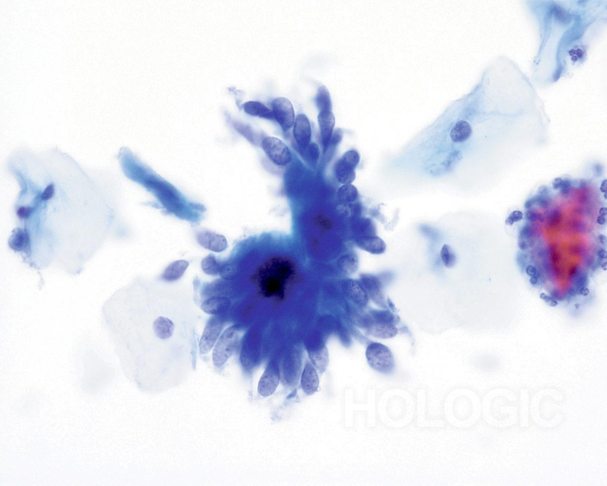
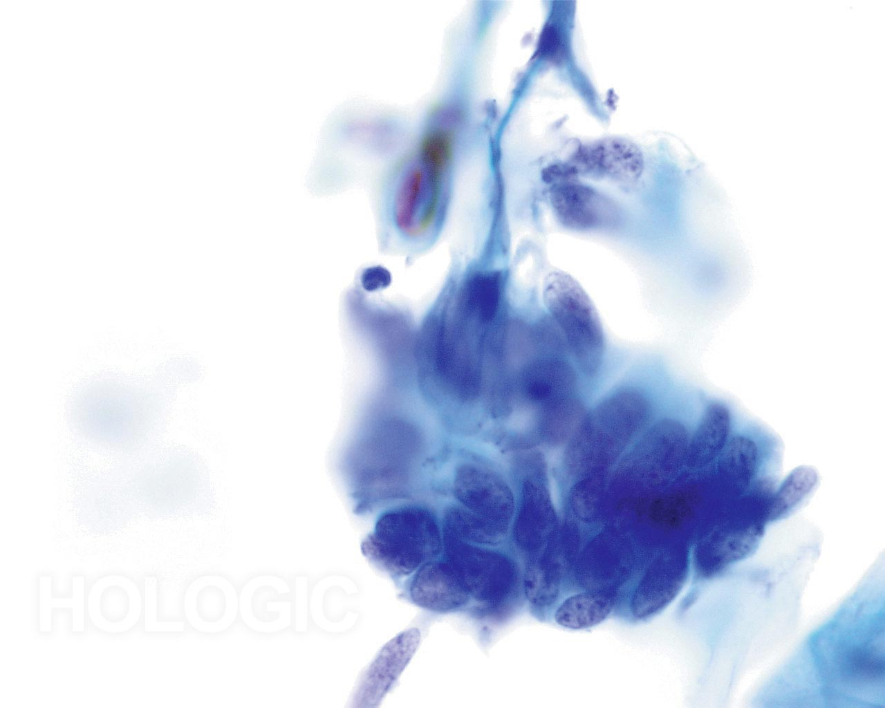
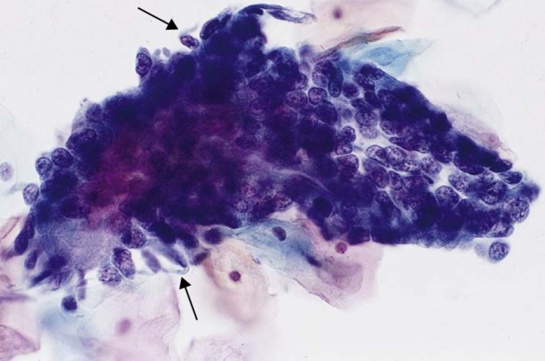
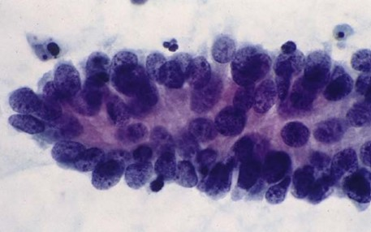
Variants of AIS (Recognized on Histology)
Invasive Endocervical Adenocarcinoma
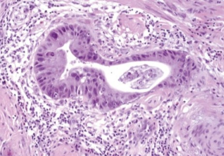
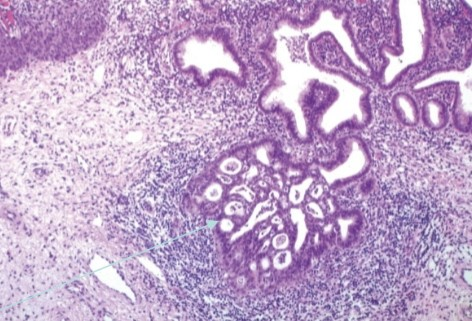
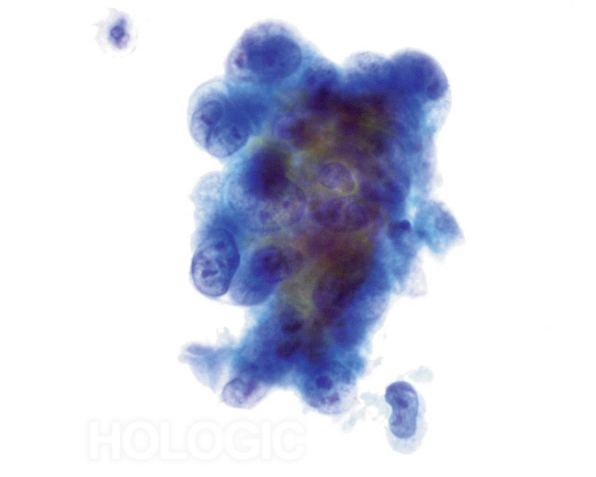
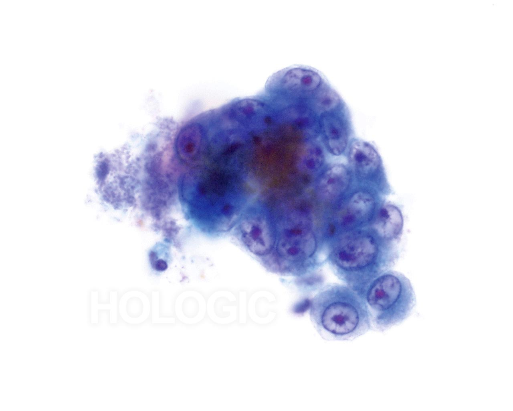
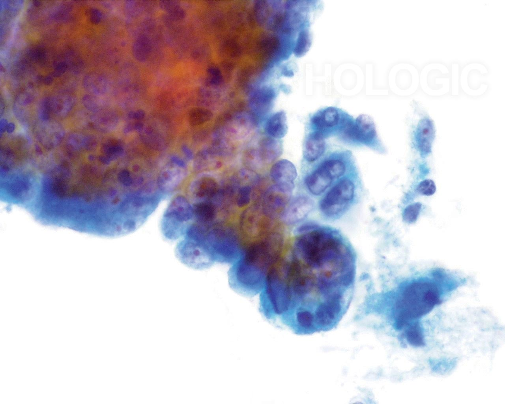
Variants of Endocervical Adenocarcinoma
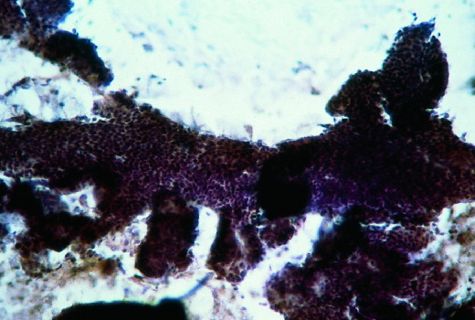
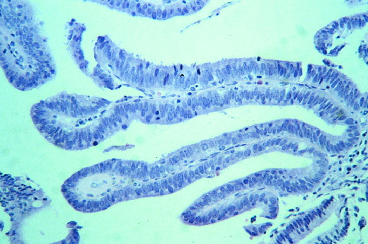
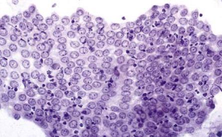
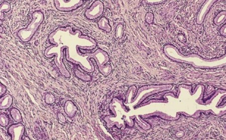
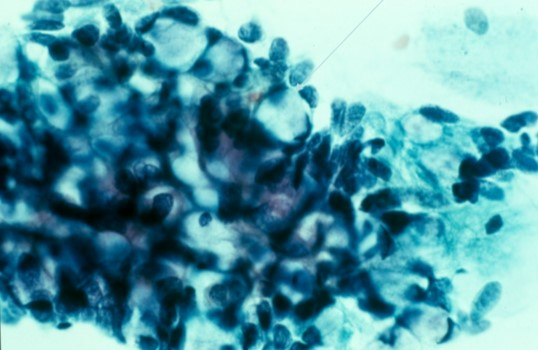
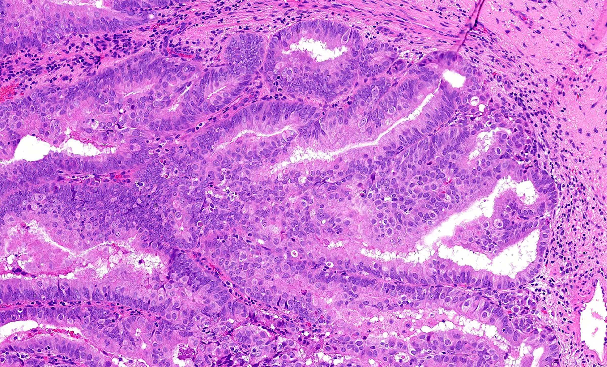
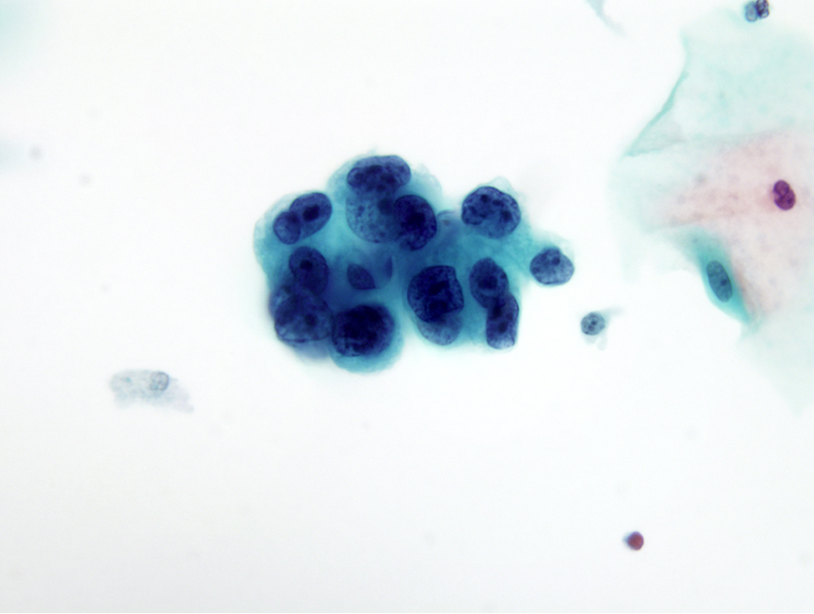
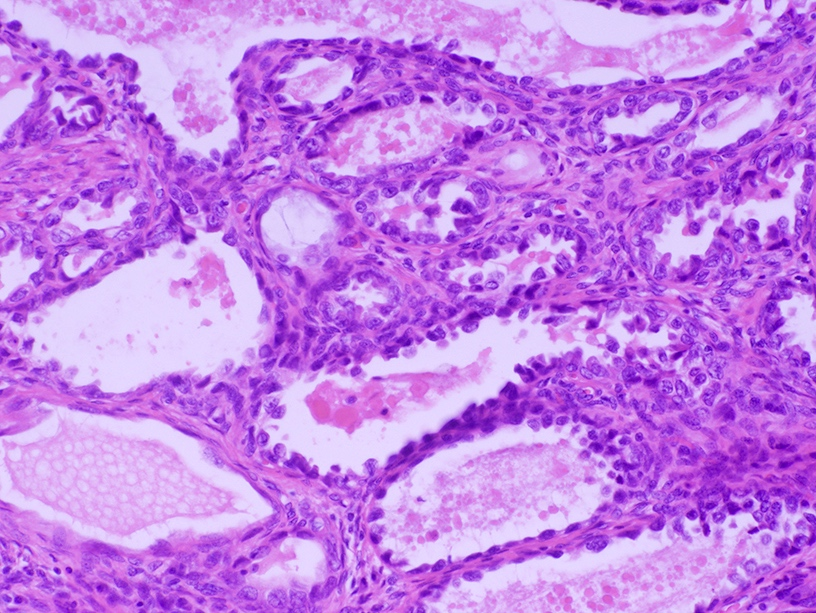
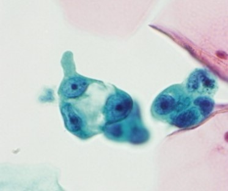
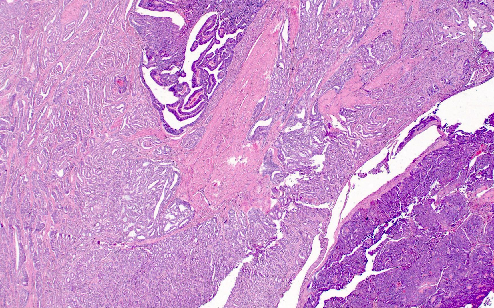
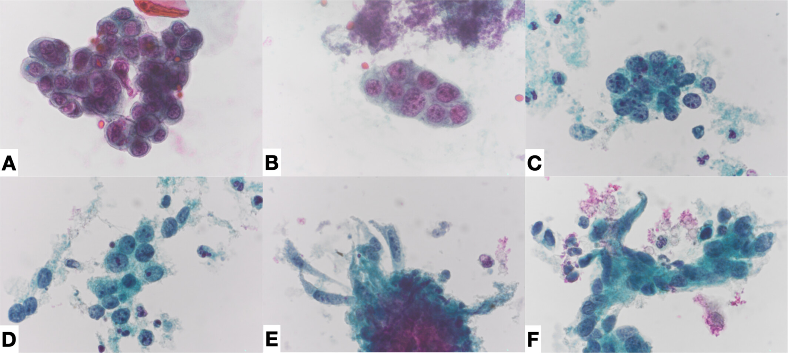
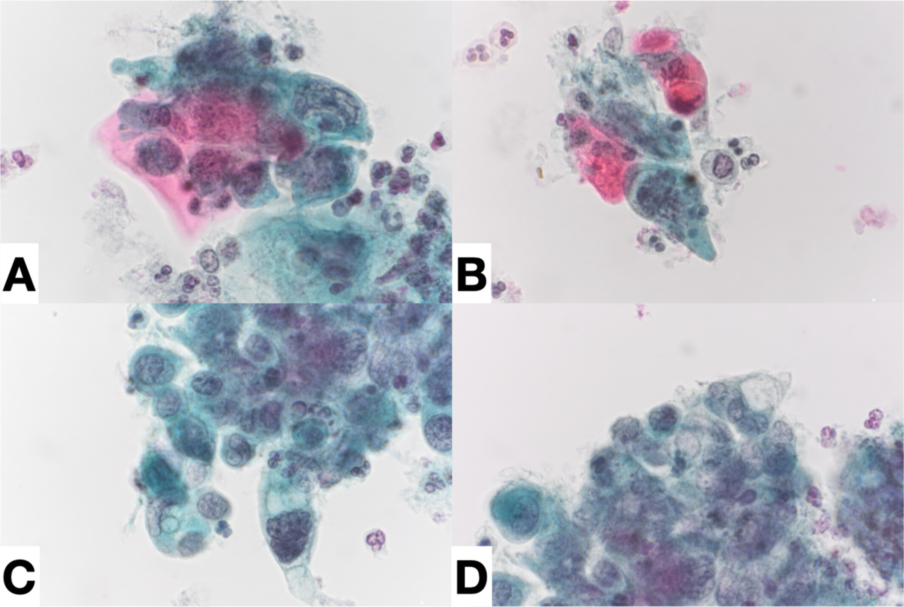
Images